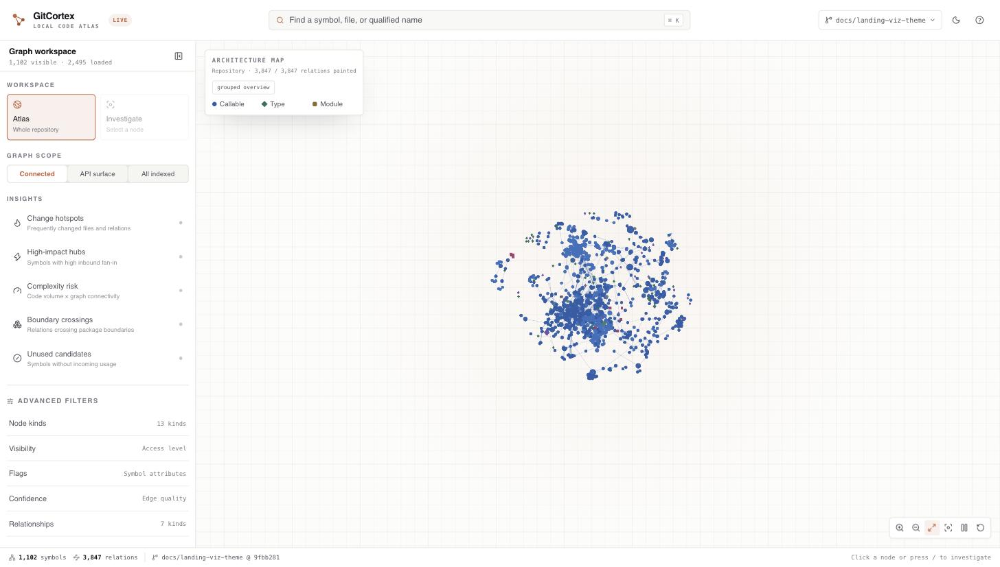
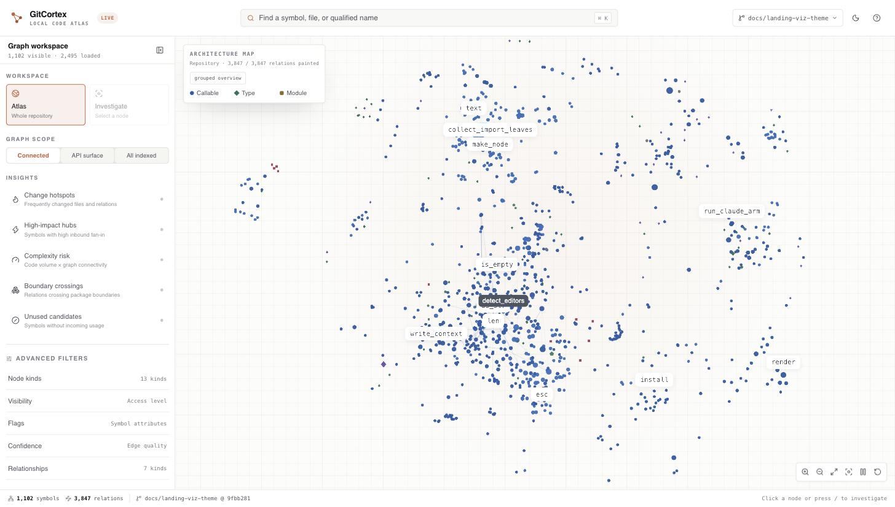

GitCortex indexes your repository into a branch-aware knowledge graph on every commit, then serves it to AI coding assistants over MCP. It runs entirely on your machine: no cloud, no API keys, no LLM calls, no source code leaving disk.
brew install bharath03-a/tap/gitcortex
Four git hooks keep the graph honest: post-commit, post-merge,
post-rewrite, post-checkout. Each run diffs from the last indexed
SHA rather than HEAD~1, so rebases and amends never leave the graph stale.
gcx viz serves the graph as a local web app: an atlas for
orientation across the whole repository, and an investigation canvas for
tracing one symbol's exact neighbourhood. Both run against your own indexed
repository. These are real captures of GitCortex indexing itself.


KuzuDB runs embedded and the embedding weights are local. There is no server to call, so the tool works air-gapped and cannot leak source by design.
Only changed files are re-parsed, diffed from the last indexed SHA. Re-running is idempotent, so a hook that fires twice costs nothing.
Each branch gets its own namespace, so switching branches switches context.
branch_diff reports what changed structurally between any two.
gcx serve speaks the Model Context Protocol, so any compatible
assistant queries the graph through structured tools instead of grep.
A tree-sitter backend gives one parsing API across every supported language. Types, functions, methods, traits, calls, and imports are extracted structurally.
Hybrid lexical and local-embedding search over names and qualified paths. Definitions rank above containers, test helpers, and documentation headings.
Deterministic label propagation over Contains and Calls edges.
find_clusters surfaces module groupings; find_god_nodes finds
high-fan-in bottlenecks.
An Axum-served React and Cosmograph front end, colour-coded by node kind, filterable and keyboard-navigable. Exports to HTML, SVG, DOT, and GraphML.
Headings become Section nodes and code-span mentions resolve to
References edges, so documentation links are tracked in the same graph
as the code they describe.
Transitive caller analysis against a base branch, ranked production-first with tests reported separately, usable from the CLI or as a pull-request comment.
Pre-built binaries cover macOS on arm64 and x86_64, and Linux on x86_64 and arm64. On Windows, use WSL2.
# macOS or Linux
brew install bharath03-a/tap/gitcortex
# Index a repository; add --editor <name> for opt-in MCP setup
gcx initThe official tap installs the matching pre-built binary. No Rust, Python, or Node.js runtime required.
# Recommended: any Python 3.8+ environment
pip install gitcortex
# Isolated install
pipx install gitcortex
uv tool install gitcortex
# Install the git hooks in your repository
gcx initWheels bundle pre-built binaries for macOS arm64 and x86_64 and Linux x86_64 and arm64. No Rust toolchain required.
# Install from crates.io
cargo install gitcortex --locked
# Install the git hooks
gcx init
# Start the MCP server
gcx serveRequires Rust 1.80 or newer. KuzuDB is built from source, so the first build takes roughly five minutes.
# Install globally
npm install -g gitcortex
# Or with pnpm / bun
pnpm add -g gitcortex
bun add -g gitcortex
# Install the git hooks
gcx initThe npm package bundles the same pre-built binaries as the Python wheel.
# macOS arm64
curl -LO https://github.com/bharath03-a/GitCortex/releases/latest/download/gitcortex-aarch64-apple-darwin.tar.xz
tar -xf gitcortex-aarch64-apple-darwin.tar.xz
sudo mv gcx /usr/local/bin/
# Linux x86_64
curl -LO https://github.com/bharath03-a/GitCortex/releases/latest/download/gitcortex-x86_64-unknown-linux-gnu.tar.xz
tar -xf gitcortex-x86_64-unknown-linux-gnu.tar.xz
sudo mv gcx /usr/local/bin/Every target is listed on the releases page.
Add gcx serve to your .mcp.json and any MCP-compatible
assistant gains typed access to the graph.
lookup_symbol(name)Every definition matching a name, across the graphfind_callers(name)Ranked callers with file and line evidenceget_subgraph(name, depth)Bounded neighbourhood: callers, callees, implementationssearch_code(query)Ranked hybrid search over names and qualified pathsfind_god_nodes(min_in_degree)High-fan-in symbols: bottlenecks and hot modulesfind_clusters(min_size)Label-propagation clusters over the call graphbranch_diff(from, to)Structural difference between two branchesstart_tour(seed?)Guided walkthrough, centrality-ranked or seeded.mcp.json (project root)
{
"mcpServers": {
"gitcortex": {
"command": "gcx",
"args": ["serve"],
"env": {}
}
}
}Works with Claude Code, Cursor, Windsurf, Continue.dev, and any other MCP host.
Every run below is reproducible from the scripts named in its methodology line. Numbers are not smoothed across runs: methodology changed between them, and each panel says how.
Deterministic, model-free retrieval gate over five pinned repositories (Rust, Python, TypeScript, Go, Java), plus one native Codex CLI smoke run.
Mean reciprocal rank on the pinned suite: every query returns a relevant definition in first position.
Every task returns the required evidence, omits forbidden evidence, and stays inside its payload budget.
Native codex exec graph-CLI lane on cobra, one round: uncached
token geomean against a grep baseline.
This lane is model-free by design, so it is gated on every commit rather than run
on a schedule. See
the retrieval gate write-up
and
the full benchmark plan.
Reproduce: python3 tools/agent-bench/bench.py run.
Median of 3 runs against Claude haiku-4.5, errored and rate-limited sessions excluded. Measured Claude token usage: once with ordinary file search, once through the compact MCP.
Across search, tour, callers, and subgraph questions on five repositories.
Summed across all questions and repositories in this run.
The most consistent win: roughly half the turns to the same answer.
Java (gson) remained the weakest repository; large, idiomatic repositories
benefited most. Full report:
final-report-2026-07-17.html.
Reproduce: bash docs/benchmarks/stable-sweep.sh.
Single-round v0.6.2 data, superseded by the 2026-07-17 median-of-3 run above. Kept here for the historical record.
New question type this run; one 13.5× outlier on ripgrep.
The most stable signal across every release measured so far.
hono excluded from this figure after an errored session.
gson and hono were the consistent weak spots in this run: Java parser coverage
and TypeScript dynamic patterns were still open work at this point. Full report:
final-report-2026-07-12.html.
Reproduce: bash docs/benchmarks/real-harness.sh.
Install the binary, run gcx init to wire up the hooks, and the graph
maintains itself from then on.